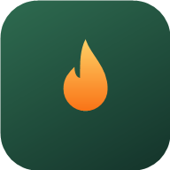

Site güncelleniyor
Yeni özellikler ekliyoruz. Kısa süre içinde geri döneceğiz.
Bu sayfa bakım bitince kendiliğinden açılır, yenilemene gerek yok.

Bu hesap veya cihaz yöneticiler tarafından kısıtlandı.
Kısıtlama süresince sadece haritayı görüntüleyebilirsin; bildirim gönderme, oy verme, profil ve ayarlar kilitlidir. Bir hata olduğunu düşünüyorsan okul yöneticinle iletişime geç.
Yeni özellikler ekliyoruz. Kısa süre içinde geri döneceğiz.
Bu sayfa bakım bitince kendiliğinden açılır, yenilemene gerek yok.
Kuru ot, ormana bitişik evler, eksik hidrantlar… Riski, yangın çıkmadan önce birlikte haritalıyoruz.
Bildirimler yükleniyor.
Gösterge, haritadaki orman yangını bildirimlerinin ortanca risk puanını gösterir. Puan, her bildirimde aynı sorulardan hesaplanır.
GeoGözcü'nün sahadan haritaya nasıl çalıştığını izle: sitenin gerçek kaydı, Türkçe anlatım ve altyazıyla.
Açılıştaki orman görüntüsü temsilîdir; sonraki tüm görüntüler bu sitenin gerçek kaydıdır. MP4 indir
Ana odağımız orman yangını riski: kuru ot birikimi, ormana bitişik evler, kontrolsüz yakım, eksik hidrant. Ayrıca patlak boru gibi acil arızalar, sel, atık, altyapı ve yol hasarları.
Haritadaki bir yerden geçtin mi? Düzelmiş ya da Hâlâ var de. Çoğunluk “düzelmiş” derse yöneticiler inceler. Her bildirim puan kazandırır; rozetler topla, lider tablosunda yüksel.
Bu harita aktif yangınları göstermez. Yanan bir yer görürsen bildirim yapma, hemen 112'yi ara. Patlak boru için 185, elektrik için 186, doğalgaz için 187.
Yöntem, risk puanının nasıl hesaplandığı, canlı bulgular ve indirilebilir veri seti proje sayfasında.
Orman yangını başlamadan önce riski görelim.
Orman yangınları iklim değişikliğiyle büyüyen küresel bir sorun. Biz bu soruna mahallemizden, yerel bir çözüm üretiyoruz: yangın riski taşıyan alanları fotoğraflayıp haritaya ekliyor, risk puanıyla önceliklendiriyoruz. Patlak boru gibi acil arızalar ve yol hasarları da ayrı bölümlerde.
Küresel bir sorun olan orman yangınlarına yerel bir çözüm üretmek. İzmir'de, özellikle Gaziemir'de orman ile yerleşimin iç içe geçtiği bölgelerdeki kuru ot birikimi, kontrolsüz yakım ve yangın altyapısı eksikliği gibi riskleri yangın çıkmadan görünür kılıyoruz. Vatandaşın gözlemi; belediye, itfaiye ve afet ekiplerinin önceliklendirmesine yardımcı olacak düzenli bir veriye dönüşür.
EGEV 100. Yıl Lisesi öğrencilerinin TÜBİTAK kapsamında geliştirdiği gönüllü bir vatandaş bilimi projesi.
Bu harita aktif yangınları göstermez. Şu an yanan bir yer görürsen hemen 112'yi ara.
EGEV 100. Yıl Lisesi · TÜBİTAK projesi
veya e-posta ile
GeoGözcü, Gaziemir'de orman yangını riski taşıyan alanları yangın çıkmadan önce belirlemek için geliştirilen bir vatandaş bilimi uygulamasıdır. Gönüllüler sahada gördükleri riskleri fotoğraflı ve konumlu olarak bildirir; her bildirim aynı ölçütlerle puanlanır ve herkese açık bir haritada toplanır.
49 sn · Türkçe anlatımlı ve altyazılı. Açılıştaki orman görüntüsü temsilîdir; sonraki tüm görüntüler bu sitenin gerçek kaydıdır. MP4 indir · Altyazı (SRT)
Akdeniz iklim kuşağında yer alan İzmir, yaz aylarında orman yangınlarından sıkça etkilenen illerden biridir. Gaziemir'in kent dokusu, kuzey ve doğusundaki ormanlık alanlara doğrudan temas eder. Bu geçiş kuşağında biriken kuru ot, budama atıkları, kontrolsüz yakma ve eksik yangın altyapısı, küçük bir kıvılcımın yerleşim alanına ulaşma ihtimalini artırır.
Bu riskler çoğu zaman yangından önce görülebilir, ama sistematik olarak kaydedilmez. Projemizin sorusu şudur: Gönüllülerin topladığı standart gözlemlerle, mahalle ölçeğinde yangın riski haritası çıkarılabilir mi?
Bileşenlerin toplamı 100'ü geçerse puan 100 olarak kabul edilir. Diğer kategoriler (sel, atık, altyapı, yol, acil arıza) kendi sorularıyla benzer biçimde puanlanır.
| Bileşen | Seçenekler ve puanlar | En fazla |
|---|---|---|
| Kuru bitki örtüsü yoğunluğu | Az 0 · Orta 14 · Yoğun 28 | 28 |
| Orman kenarına uzaklık | 0-50 m 25 · 50-200 m 16 · 200-500 m 8 · 500 m+ 0 | 25 |
| İtfaiye aracı erişimi (1-5) | (5 − erişim puanı) × 4 | 16 |
| Etkilenebilecek yapı sayısı | Yok 0 · 1-5 5 · 6-20 10 · 20+ 15 | 15 |
| Arazi eğimi | Düz 0 · Orta 7 · Dik 14 | 14 |
| Yakında su kaynağı / hidrant | Var 0 · Bilinmiyor 6 · Yok 12 | 12 |
| Ek gözlemler (yakma izi, tüp deposu vb.) | Her biri 3 | 12 |
Ağırlıklar; orman yangını davranışında yakıt yükü, eğim ve müdahale süresinin belirleyici olduğu bilgisine dayanarak ekibimiz tarafından belirlendi. Saha verisi arttıkça gözden geçirilecektir.
Veriler yükleniyor.
Grafikler haritadaki yayında bildirimlerden canlı olarak hesaplanır.
Yayındaki tüm bildirimler analiz için indirilebilir. Gözlemci adları ve kullanıcı bilgileri dosyada yer almaz; konumlar yaklaşık 1 m hassasiyete yuvarlanır.
Sütunlar: tarih, kategori, alt başlık, risk puanı, ilçe, mahalle, enlem, boylam, çözülme tarihi, “düzelmiş” ve “hâlâ var” oy sayıları.
Haritada gözlemci adları kısaltılmış (ör. “A---i K---a”) gösterilir; gerçek adları yalnızca yöneticiler görür. Gönüllülerden yüz ve plaka içeren fotoğraf çekmemeleri istenir. Harita aktif yangınları göstermez ve resmi kurumlara otomatik bildirim yapmaz; acil durumlarda 112 aranmalıdır.
·
geogozcu-kaynak/ ├─ index.html sayfa iskeleti ├─ style.css tasarım ├─ app.js uygulama mantığı ├─ harita-araclari.js harita araçları ├─ sinema.js animasyonlar ve rehber ├─ sinirlar.js İzmir / Gaziemir sınırları ├─ config.js kendi Supabase bilgilerin ├─ vendor/ Leaflet, GSAP, Supabase istemcisi ├─ veritabani/ kurulum SQL dosyaları └─ OKU-BENI.md kurulum adımları
Paket gizli anahtar içermez; kendi Supabase projeni bağlamak için config.js dosyasını doldurman yeterli. Kötü söz filtresinin kelime listesi güvenlik için pakete konmadı. Eğitim amaçlı serbestçe kullanabilirsin; kaynak göstermen rica olunur.
Haritaya en çok katkı verenler. Yayındaki her bildirim puan kazandırır; orman yangını riski (ana odağımız) ve acil durum bildirimleri ekstra puan getirir.
İncelemeye düşen veya kaldırılan bildirimler puan getirmez.
Kurallar: 3-24 karakter, harf, rakam, nokta, tire, alt çizgi. Benzersiz olmalı, uygunsuz ifade içeremez. Ad değişince eski adların profilinde “Geçmiş kullanıcı adları” olarak görünür.
Siteyi ana ekranına eklersen uygulama gibi tam ekran açılır, internet kesilse de son hâli görünür.
Hesabın ve gönderdiğin tüm bildirimler kalıcı olarak silinir. Bu işlem geri alınamaz.